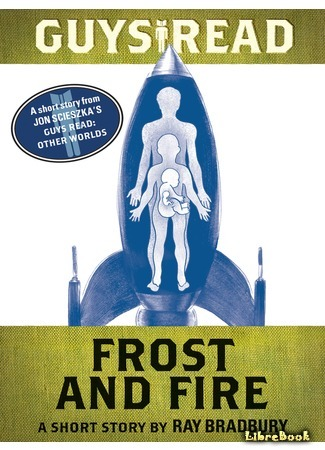
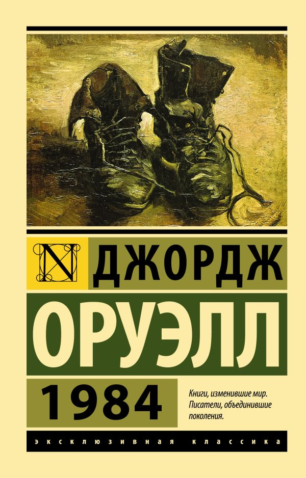
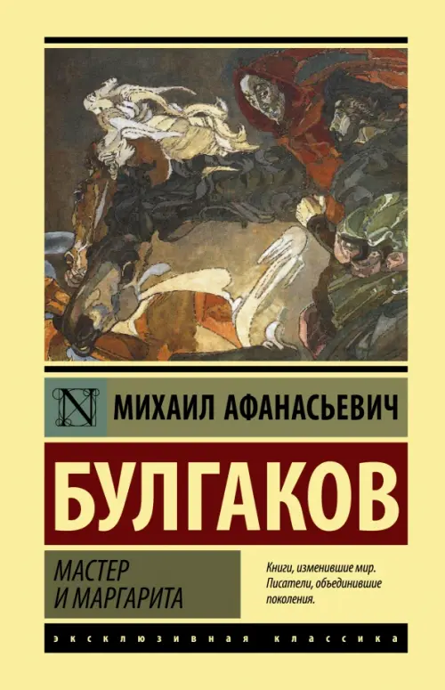
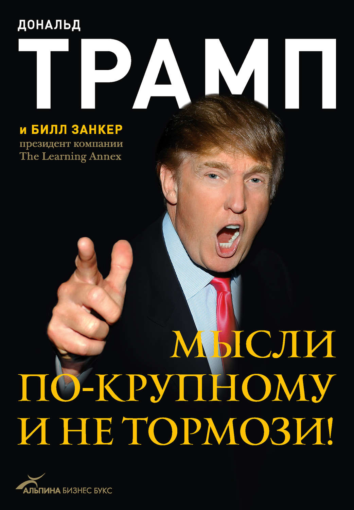
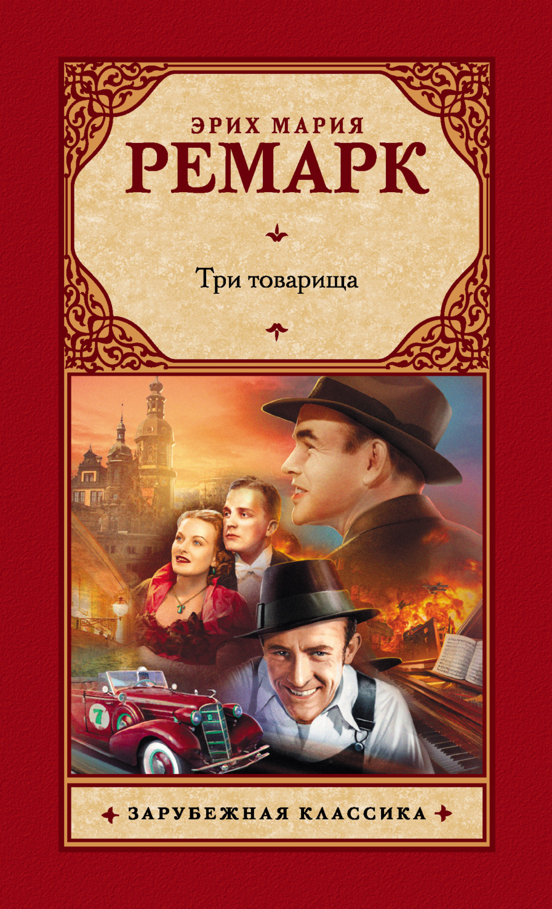
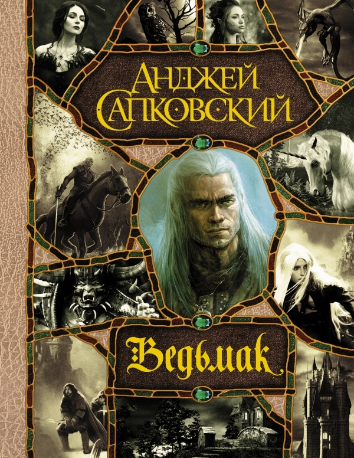
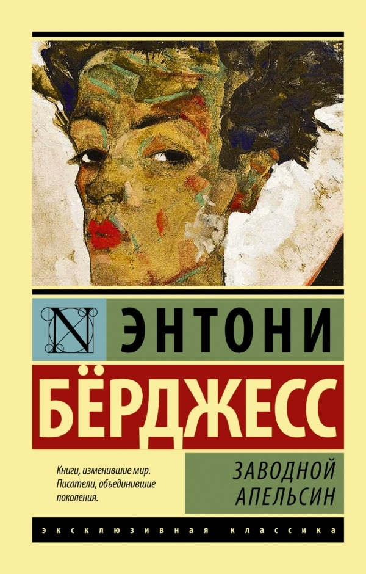
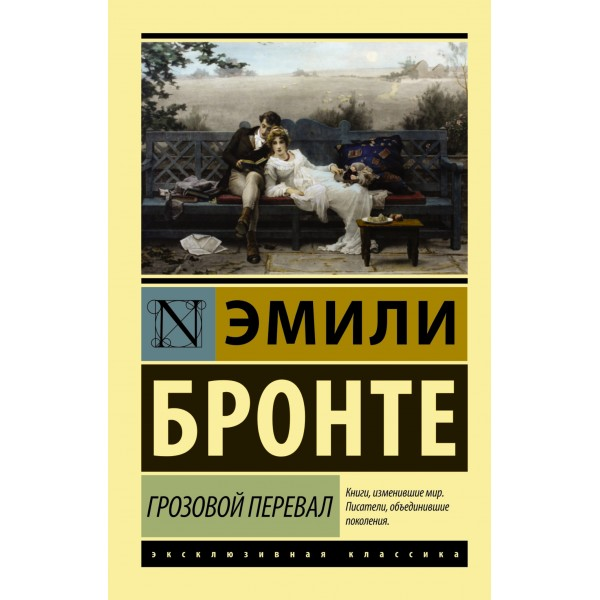
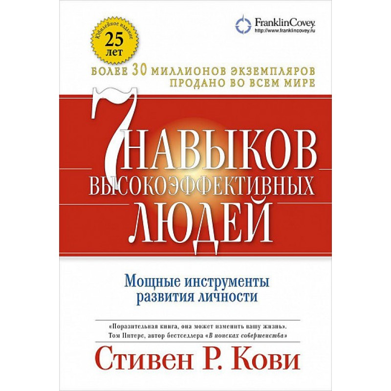
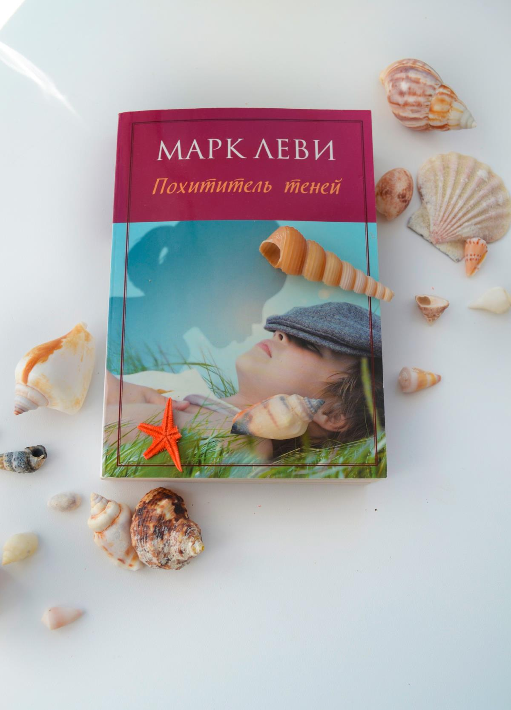

|  |
Рэй Бредбери "Лёд и пламя"Человек может сделать невозможное. Даже если и его сердце бьется в бешеном ритме, даже если дни обжигают огненным дыханием, а ночи — ледяным морозом, даже если вся его жизнь продлится ровно восемь дней... Нужно только упрямо идти к цели — бегом, шагом, ползком — не имеет значения, как. Главное — не сдаваться. Отличное короткое произведение с глубоким смыслом. |
* * *
Далее стоит отметить Антиутопию, которая в наших реалиях актуальна как никогда.
Джордж Оруэлл "1984"Фантастическая антиутопия Оруэлла – это мир тотального контроля и страха, где люди живут ради войны, ради того, чтобы скрыть правду и воспитать настоящих патриотов. В жестоком тоталитарном государстве люди лишены гражданских прав и собственного мнения. «1984» – это аллюзия на страны, в которых господствовал тоталитаризм. В ХХ веке книга была запрещена в социалистических государствах и вызвала волну возмущения по всему миру. Сейчас же «1984» считается ключевым произведением в жанре антиутопии. В этом прекрасном олицетворении "Антиутопии" Вы найдёте много общего с нашей реальностью, не зря книга запрещена в некоторых странах. |
 |
* * *
Классика русской литературы перед Вами!
|  |
Михаил Булгаков "Мастер и Маргарита"Роман "Мастер и Маргарита" - визитная карточка Михаила Афанасьевича Булгакова. Более десяти лет Булгаков работал над книгой, которая стала его романом-судьбой, романом-завещанием. В "Мастере и Маргарите" есть все: веселое озорство и щемящая печаль, романтическая любовь и колдовское наваждение, магическая тайна и безрассудная игра с нечистой силой. Спорное и для многих переоценённое произведение. Когда-то я и сам так думал, пока не перечитал ещё раз. |
* * *
Ну и как же без автобиографий?
Дональд Трамп "Мысли по крупному и не тормози"Мыслить по-крупному — это кредо, которое я исповедую с ранней юности, и это проверенный и надежный путь к успеху. Билл также исповедует его, и результаты — налицо. Работа над этой книгой стала для нас обоих хорошей «инъекцией адреналина», и мы надеемся, что она не просто станет интересным чтением, но и многому вас научит. Мы хотим, чтобы каждый из вас реализовал свою мечту — и если вы будете работать не покладая рук, ваша мечта станет явью! Дональд Трамп Возможно не лучший пример автобиографии, но отличный пример сильной и независимой личности. |
 |
* * *
Зарубежная литература! Очень сложно было выбрать её представителя, большое количество сильных произведений.
|  |
Эрих Мария Ремарк "Три товарища"Самый красивый в XX столетии роман о любви... Самый обаятельный в XX столетии роман о дружбе... Самый трагический и самый прелестный роман о человеческих отношениях за всю историю прошлого века. Думаю сложно описать этот Роман лучше, просто прекрастное олицитворение коктейля из грусти и красоты. |
* * *
Как я мог обойтись без Фэнтези? Верно, никак.
Анджей Сапковский "Ведьмак"«Ведьмак» – популярной саги польского писателя Анджея Сапковского. Романы о харизматичном и смелом Геральте из Ривии продолжают обретать поклонников по всему миру. По их мотивам сняты сериалы, созданы комиксы, выпущены компьютерные игры и даже поставлена рок-опера. Я уверен, многие из Вас знают про данный цикл произведений, а те, кто не знает могли играть в игры. В любом случае: каждому любителю Фэнтези к прочтению. |
 |
* * *
Это произведение содержит и Научную фантастику, и драму, и сатиру. Просто рекомендую.
|  |
Энтони Бёрджест "Заводной апельсин""Заводной апельсин" - литературный парадокс ХХ столетия. Продолжая футуристические традиции в литературе, экспериментируя с языком, на котором говорит рубежное поколение malltshipalltshikov и kisok "надсатых", Энтони Бёрджесс создает роман, признанный классикой современной литературы. Интересное повествование, а самое важное - посыл и смысл произведения. Настоятельно советую прочемть. |
* * *
Зарубежный роман о трагической любви.
Эмили Бронте "Грозовой перевал""Грозовой перевал" Эмили Бронте — не просто золотая классика мировой литературы, но роман, перевернувший в свое время представления о романтической прозе. Проходят годы и десятилетия, но история бурной, страстной, трагической любви Хитклифа и Кэти по-прежнему не поддается ходу времени. "Грозовым перевалом" зачитывалось уже много поколений женщин — продолжают зачитываться и сейчас. Эта книга не стареет, как не стареет истинная любовь… История, которая дарит надежду на настоящую, светлую и долгую любвовь. |
 |
* * *
Хорошая книга по личностному росту способна перевернуть вашу жизнь и это и предствитель.
|  |
Стивен Р. Кови "7 навыков высокоэффективных людей"Когда в 1989 году Стивен Кови опубликовал свою фундаментальную книгу Семь навыков высокоэффективных людей с советами о продуктивности и принципах лидерства, которая оказала большое влияние не только на деловое сообщество, но и на отдельные отрасли в целом. С начала публикации было продано более 25 миллионов копий, выполнены переводы больше чем на 40 языков. Книга, которая помогает понять себя и становится мощным инструментом развития личности, послужила основой карьеры Кови в качестве публичного оратора и консультанта. Хорошая книга, если хотите меняться, но не знаете с чего начать. |
* * *
Ну и представитель такого жанра, как "Фикшн". Не знаю, что это значит, но это отличная легкая книга для пары вечеров.
Марк Леви "Похититель теней"Герой романа, меланхоличный мечтательный мальчик, обладает даром общаться с человеческими тенями и узнавать от них о прошлом их хозяев. Тени делятся с мальчиком тайнами, просят у него помощи, и постепенно он начинает понимать, что его способности можно использовать во благо — нужно только этого захотеть. Во взрослой жизни он, став врачом, не раз сталкивается с бедами и горем, однако дар, обретенный в детстве, по-прежнему ведет его, не позволяя потерять веру в мечту и любовь. Одна из моих самых любимых книг. О самом важном, легко читается и заставляет задуматься о том, что на самом деле важно в нашей жизни. |
 |
* * *
Так же хотел бы отметить следующие книги, прочтение которых просто изменит Ваш взгляд на привычные вещи.
| Дэниел Киз "Цветы для Эльджерона" Сорок лет назад это считалось фантастикой. Сорок лет назад это читалось как фантастика. Исследующая и расширяющая границы жанра, жадно впитывающая всевозможные новейшие веяния, примеряющая общечеловеческое лицо, отважно игнорирующая каинову печать "жанрового гетто". Сейчас это воспринимается как одно из самых человечных произведений новейшего времени, как роман пронзительной психологической силы, как филигранное развитие темы любви и ответственности. |
Джером Сэлинджер "Над пропастью во ржи" Писатель-классик, писатель-загадка, на пике своей карьеры объявивший об уходе из литературы и поселившийся вдали от мирских соблазнов в глухой американской провинции. Единственный роман Сэлинджера "Над пропастью во ржи" стал переломной вехой в истории мировой литературы. И название романа, и имя его главного героя Холдена Колфилда сделались кодовыми для многих поколений молодых бунтарей - от битников и хиппи до современных радикальных молодежных движений. |
| Дж. Р. Р. Толкин "Властелин колец" "Властелин Колец" Джона Толкина повествует о Великой войне за Кольцо, о войне, длившейся не одну тысячу лет. Овладевший Кольцом получает власть над всем живым и мертвым, но при этом должен служить Злу! Юному хоббиту Фродо выпадает участь уничтожить Кольцо. Он отправляется через Мордор к огненной Горе Судьбы, в которой кольцо было отлито — только там, в адском пекле, оно может быть уничтожено. Фродо и его друзьям (в числе которых эльфы, гномы и люди) противостоит Саурон, желающий получить назад свое драгоценное Кольцо и обрести власть над миром. |
Герман Гессе "Степной Волк" "Степной волк" - один из самых главных романов XX века, впервые опубликованный в 1927 году. Это и философская притча, и вместе с тем глубокое исследование психологии человека, тщетно пытающегося найти и обрести собственное "Я", постоянно балансирующего на стыке животного и человеческого начал."Степной волк" Германа Гессе – культовый философский роман 20 века. Он стал настольной книгой хиппи, многократно переиздавался. Главный герой отдается то человеческому, то животному началу, разрывается между продуманным бюргерским уютом и пьянящей неприкаянностью; преодолевая многочисленные внутренние и внешние преграды, он постепенно возвращается к себе. |